Specking on Ceramic Ware
Specking, or speckling, can be both a fault or feature in fired ceramic ware - caused or produced by metal-bearing contaminants to metallic additives
Details
A common surface defect in fired whiteware and porcelain ceramics: Fired specks mar an otherwise clean surface. Not to be confused with speckle, a term that usually describes when the effect is desired.
This is normally occurs where materials are contaminated with natural iron minerals (e.g. iron stone concretions) or by iron from the refining process. Porcelain manufacturers must be especially careful to avoid this problem. One tiny black speck can ruin an entire large fired porcelain item.
Although most industrial minerals state on their data sheets the particle size specifications they adhere to, almost all whiteware and porcelain ceramic product manufacturers test the materials they use for contamination that might contribute to specking in fired ware. Typically, any iron-containing particle remaining on a 150 mesh screen is a threat to most white burning bodies, glazes or engobes. But most must go further. Dry clay powder cannot be physically sieved beyond about 50 mesh (the screens blind), the only way is air separation or slurrying and screening. Thus many product manufacturers slurry, sieve, filter press and then pug their bodies; this tremendous effort is the only way to assure a speck-free fired surface. Manufacturers of clay bodies for potters are unable to adhere to this same level of care (for cost reasons). All they can do is monitor incoming materials and employ magnetic separation somewhere in the powder flow (users of their porcelains must learn to tolerate some fine specking).
If you are using a gas kiln and have experienced increasing levels of specking in fired ware, consider disassembling and cleaning your burners (they may have iron or oxide dust buildup inside).
Related Information
Cone 6 glaze speckling mechanism
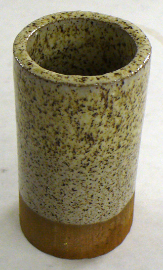
This picture has its own page with more detail, click here to see it.
This cone 6 white opacified glaze has an addition pigment-bearing granular mineral to create speckle (e.g. illmenite, manganese granular, ironstone concretions). This speckling mechanism can be transplanted into almost any glaze. Unfortunately, the metallic particles that produce the speck are often heavy and settle quickly in the glaze slurry. This can be prevented somewhat by flocculating the slurry.
An ironstone concretion found in a quarry in southern Saskatchewan
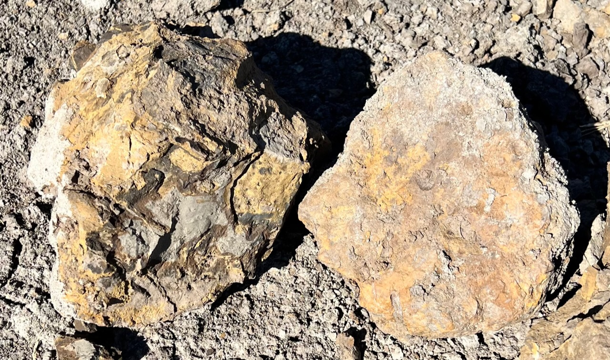
This picture has its own page with more detail, click here to see it.
These are very hard and high in iron oxide. They are found in the Battle Formation across Saskatchewan. Plainsman Clays extracts the bottom part of the Battle layers, just above the Whitemud Formation layers, about 1-2' thick, and stockpiles it as the material A1 (that clay is added to reduction fired bodies to impart speckle, color and plasticity). The A1 contains thousands of these concretions, ranging in size from lemons to toasters. When first mined they are hard and very difficult to break with a hammer. But upon aging in the sun they dehydrate slowly and crumble into small lumps. These layers are the same as those in which the worlds largest T.Rex was found (learn more at the T.rex Discovery Centre).
Iron oxide particle agglomerates produce heavy specking
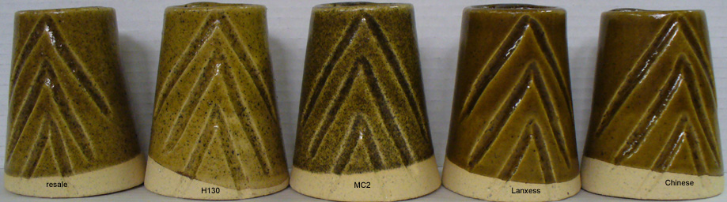
This picture has its own page with more detail, click here to see it.
5 different brand names of iron oxide at 4% in G1214W cone 5 transparent glaze. The specks are not due to particle size, but differences in agglomeration of particles. Glazes employing these iron oxides obviously need to be sieved to break down the clumps.
Comparing the fired glaze specks from different iron oxide brands
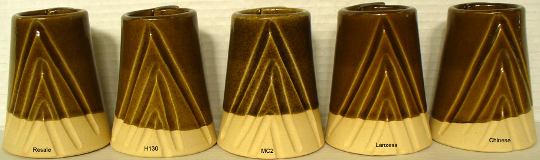
This picture has its own page with more detail, click here to see it.
Five different brand names of iron oxide at 4% in G1214W cone 5 transparent glaze. The glazes have been sieved to 100 mesh but remaining specks are still due to agglomeration of particles, not particle size differences.
This is how much iron particulate bar magnets can pull from a clay conveyor
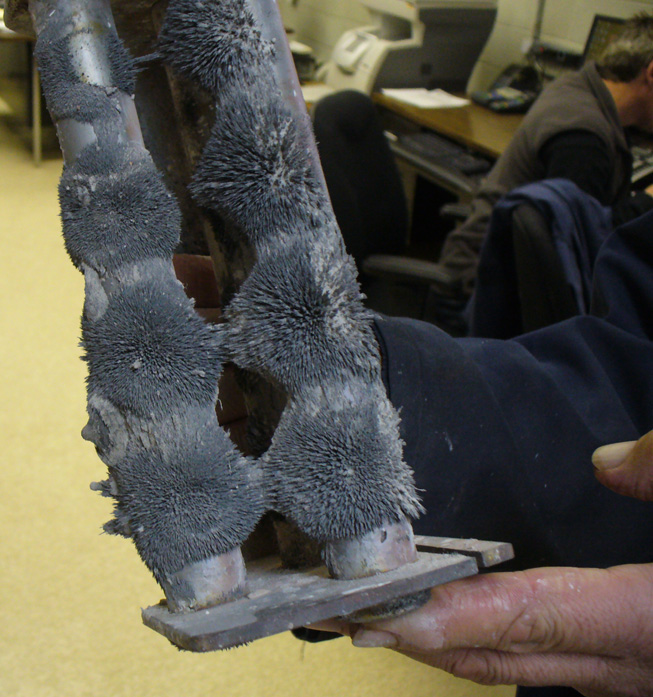
This picture has its own page with more detail, click here to see it.
These are two strong bar magnets that are suspended below the chamber of a hammermilll that grinds stoneware clays. This iron they hold is both natural in the clays and from wearing of the hammers during grinding.
Could these bentonite particles cause specking in a porcelain?
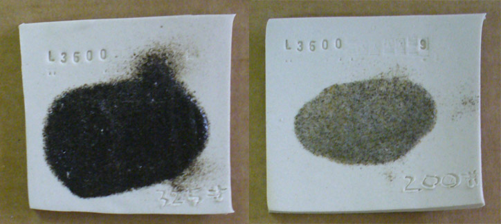
This picture has its own page with more detail, click here to see it.
The stated particle size of a material and fired appearance can both be misleading. For example, these are Volclay 325 bentonite particles fired to cone 8 oxidation. They are from a water washed sieve analysis test, the oversize particles from a 325 mesh screen (left) make up 2% of the total and 1% are from the 200 mesh screen (right). Although the 325 particles appear ominously dark, individually they are likely to small to produce apparent fired specks in a porcelain. However 200 mesh sizes can produce visible fired specks, but that fraction of oversize does not have nearly as high iron or flux content. Still, the finer darker particles could agglomerate, it might be better to use a cleaner bentonite to plasticize a porcelain.
Sponging and fired specks
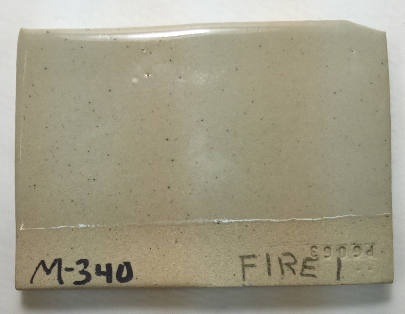
This picture has its own page with more detail, click here to see it.
The left half of this cone 6 buff burning native-clay stoneware (Plainsman M340) was sponged at the dry stage. That exposed iron-bearing particles that are normally pushed under the surface. The result is a denser population of fired specks. While not usually a problem on flat surfaces, this can be an issue when rims of functional pieces are sponged and glazes stretch thin there during firing.
Surface treatment affects glaze speck development in jiggered stoneware

This picture has its own page with more detail, click here to see it.
Notice the inside of this large transparent glazed cone 6 stoneware bowl. There is a concentration of specks on one part because that area was sponged at the leather hard and dry stages to smooth surface problems that happened during the jiggering process. These specks are normally driven below the surface during forming.
Ball Clays differ in the amount of particulate carbon
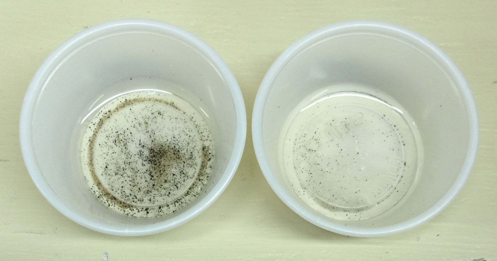
This picture has its own page with more detail, click here to see it.
This is the plus 100 mesh particulate from 50 grams of two different ball clays. Most of the particles are carbon, they will burn out and possibly cause glaze defects. If any of them are metallic, they will produce fired specks.
Watch out for iron particles in ball clays
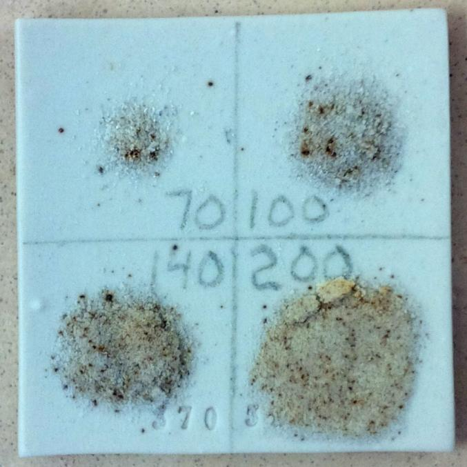
This picture has its own page with more detail, click here to see it.
These are the oversize particles (from the 70, 100, 140 and 200 mesh sieves) from 100 grams of a commercial ball clay. They have been fired to cone 10 reduction. As you can see, this material is a potential cause of specking, especially in porcelain bodies. It is not only wise to check for oversize particles in clays, but firing these particles will reveaal if they contain iron. A 200 mesh screen would be a good start for this test, it would catch all of these.
Oversize particles in a typical manufactured porcelain body
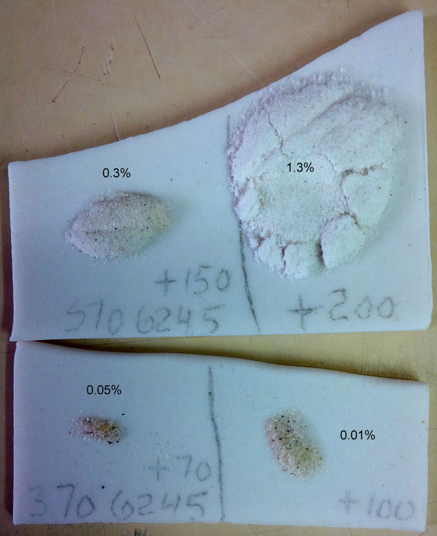
This picture has its own page with more detail, click here to see it.
Example of the oversize particles from a 100 gram wet sieve analysis test of a powdered sample of a porcelain body made from North American refined materials. Although these materials are sold as 200 mesh, that designation does not mean that there are no particles coarser than 200 mesh. Here, there are significant numbers of particles on the 100 and even 70 mesh screens. These contain some darker particles that could produce fired specks (if they are iron and not lignite); thank goodness in this case they do not. Oversize particlate is a fact of life in bodies made from refined materials and used by potters and hobbyists. Industrial manufacturers (e.g. tile, tableware, sanitaryware) commonly process the materials further, slurrying them and screening or ball milling; this is done to guarantee defect-free glazed surfaces.
Working with Polar Ice translucent porcelain requires impeccable cleanliness
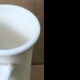
This picture has its own page with more detail, click here to see it.
Using stonewares it is easy to get pretty sloppy in the studio because a particle of iron or cobalt in a glaze or body is no big deal. But on a ice white, translucent, transparent-glazed piece it is a really big deal. These specks are particles of cobalt that were trapped in my 80 mesh glaze screen from previous use. I use a soft brush to coax the glaze through the screen faster, but even that was enough to dislodge some of the cobalt particles. The lesson: I need a dedicated glaze screen for use with this transparent glaze, it gets used for nothing else.
Same glaze, same M340 clay, same firing. Why is one more speckled?
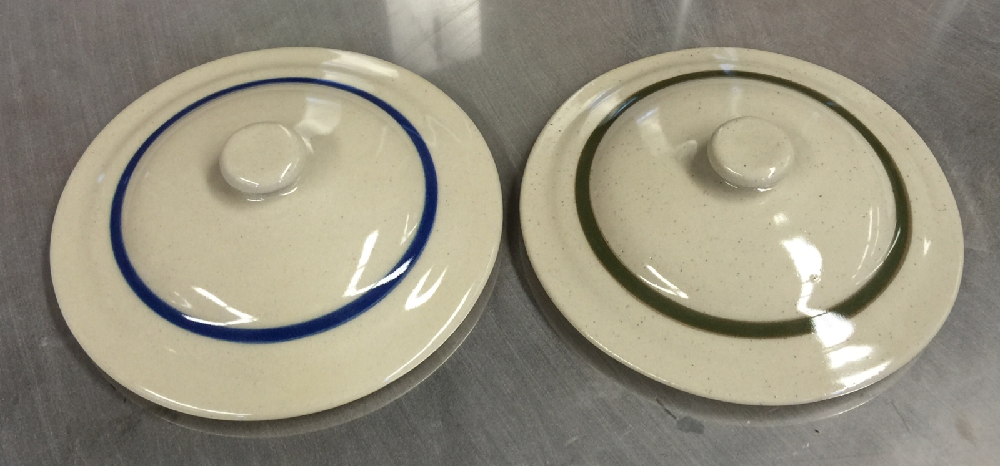
This picture has its own page with more detail, click here to see it.
These are jiggered lids made from Plainsman M340 cone 6 stoneware. The one on the right was sponged in the dry stage to smooth issues that occurred during jiggering. That has exposed speck-producing particles that were under the surface. However that is not the only possible factor. This body is made from quarried materials that are ground to 42 mesh. So speckle variation can be expected because it is derived from natural iron pyrites in the clay (they can vary in concentration, hardness and color intensity).
Fired specks in gas-fired porcelain. Where is the contamination from?
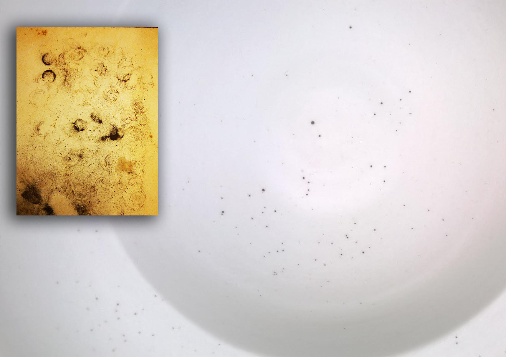
This picture has its own page with more detail, click here to see it.
The materials and body were clean. The problem was very strange because the specks only appeared on the insides of the ware. The problem turned out to be iron powder in the burners (shown in the overlay in this photo). Disassembling and cleaning them solved most of the issue. The rest? Disassembling and cleaning them better!
Screened to 80 mesh and feels absolutely smooth, but still speckles in reduction
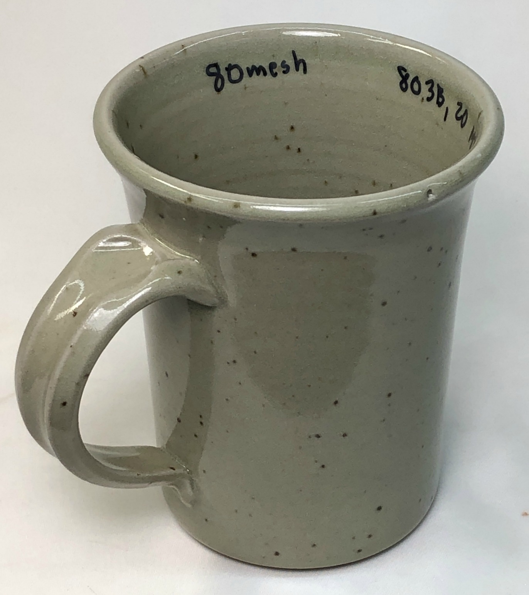
This picture has its own page with more detail, click here to see it.
The reduction was fairly heavy and this piece went to cone 11. The tiny ironstone concretion particles melted vigorously and flowed. This is why clean firing results requires 200 mesh materials!
A high speed grinder from Amazon. Does it work to remove fired defects?
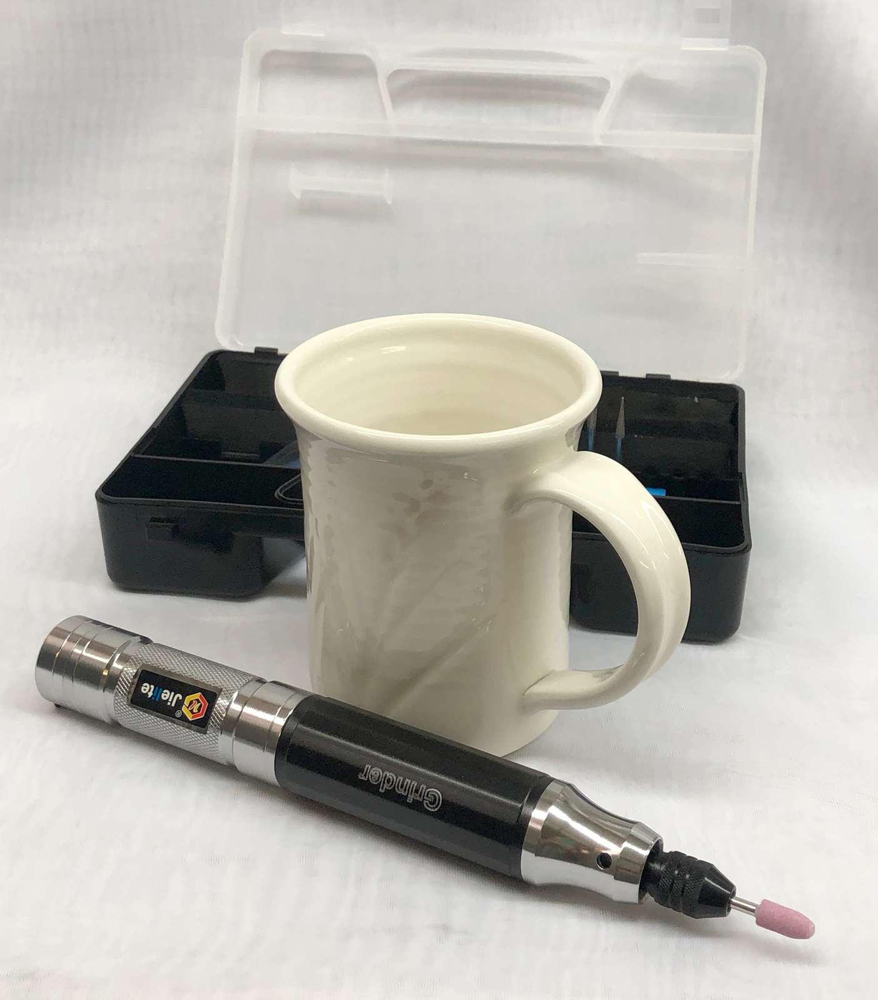
This picture has its own page with more detail, click here to see it.
Yes. I paid $70 US to get a good one. It runs at a very high speed. It is battery powered and has many ends. It uses the 18650 lithium ion battery (also used to make power packs for laptops, power tools, even bikes and cars). I got this one on Ebay, it was listed as "Electric Mini Chargeable Engraving Pen Machine For Carving Grinding Metalworking". It is good quality and came with many unexpected accessories. It easily ground through the glaze and into the porcelain far enough to remove the speck. Then I just needed to fill up the hole with glaze and refire. This could also be used to remove burrs and nicks that might make a piece unsaleable. Can you engrave (e.g. text) into a glaze or porcelain? No. Even though there are heads intended to do this, the spinning motion gives the tool a mind-of-its-own about where it wants to go. And it hops. A lettering template might help but it would still be very difficult to get a deep enough scratch into the surface to be visible.
Links
| Glossary |
Reduction Speckle
A sought-after visual effect that occurs in reduction fired stoneware. Particles of iron pyrite that occur naturally in the clay melt and blossom up through the glaze |
| Glossary |
Ceramic Glaze Defects
Ceramic glaze defects include things like pinholes, blisters, crazing, shivering, leaching, crawling, cutlery marking, clouding and color problems. |
 PayPal | No tracking, No ads, No paywall, No transient content! Just organized, concise information constantly updated and improved. Was this helpful? Consider supporting me. |
| By Tony Hansen Follow me on        |  |
Got a Question?
Buy me a coffee and we can talk 

https://digitalfire.com, All Rights Reserved
Privacy Policy